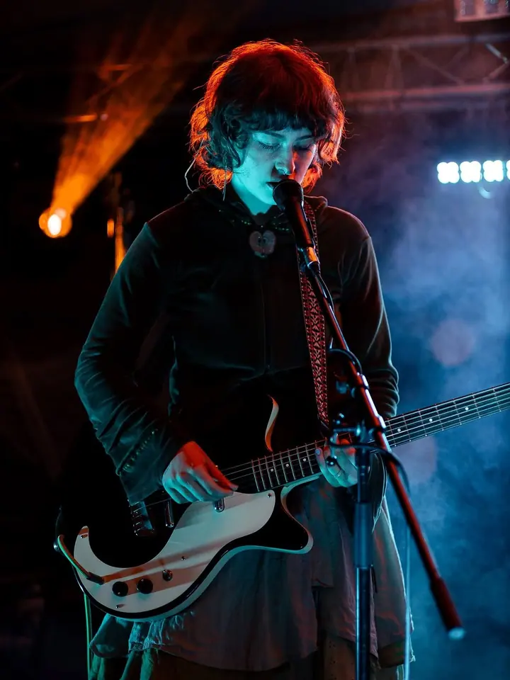
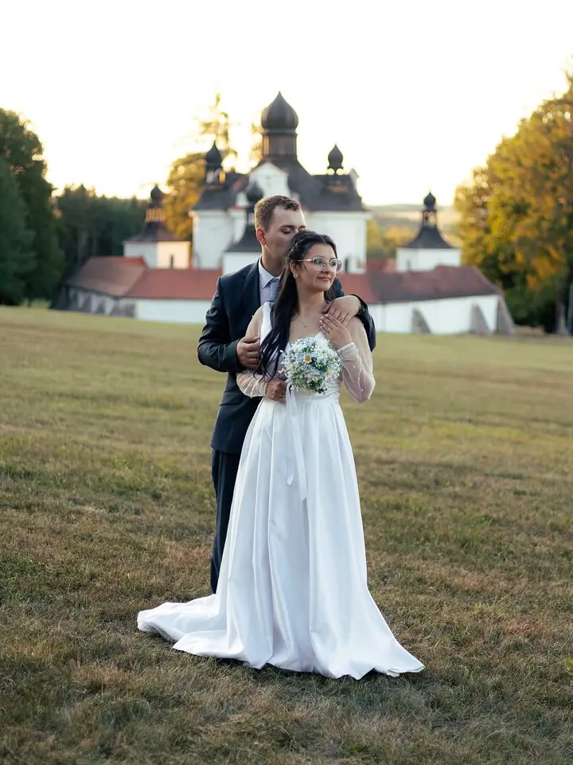
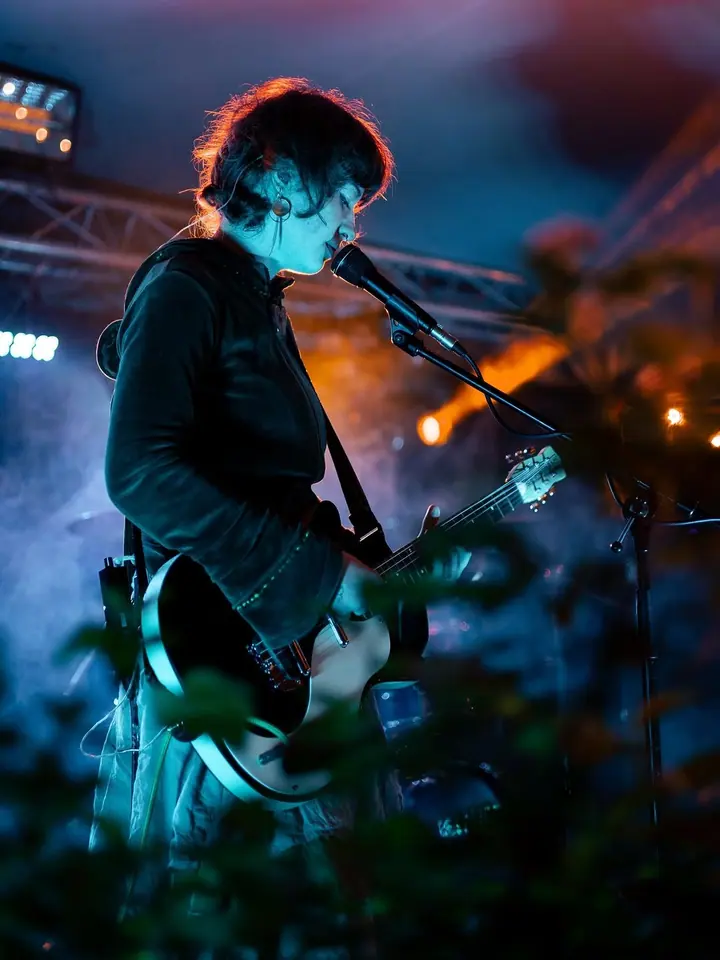
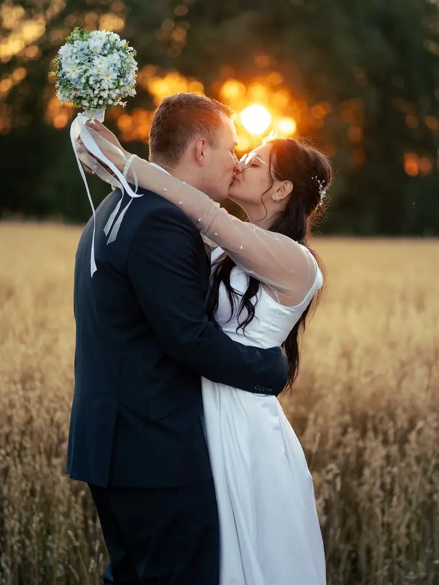
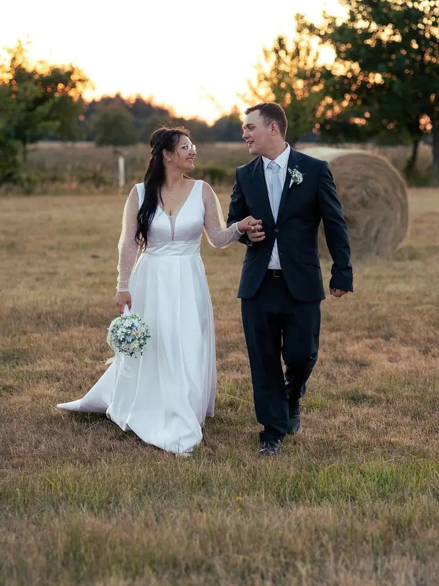
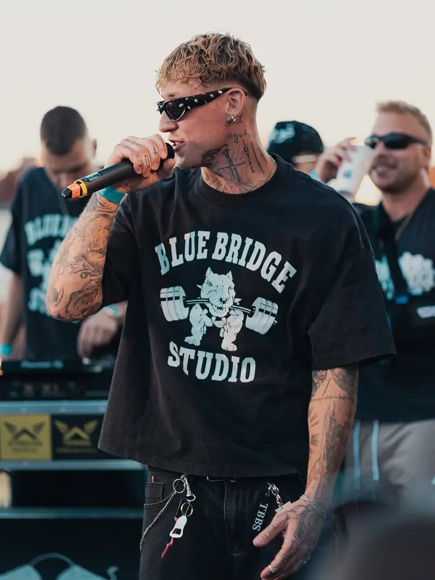

01 / 04
Koncerty a festivaly
Fotím kapely a interprety přímo pod pódiem, ve světlech, kouři a v plném nasazení. Hodí se pro kluby, festivaly i propagaci umělců.
Zeptat se na termín→





Koncerty, svatby a plesy z první řady
Zeptat se na termín →(01) Ahoj
Jmenuji se Jaroslav Stuchlý a pod značkou Zerry Photo fotím koncerty , svatby i lidi, kteří zrovna žijí naplno . Základnu mám v Českých Budějovicích, ale za focením jezdím po celé republice.
1 204lidí sleduje mou práci na Instagramu
81příspěvků s fotkami a příběhy
(02) Co fotím
01 / 04
Fotím kapely a interprety přímo pod pódiem, ve světlech, kouři a v plném nasazení. Hodí se pro kluby, festivaly i propagaci umělců.
Zeptat se na termín→02 / 04
Před svatbou se rád potkám osobně nebo na callu, abychom doladili detaily a vy věděli, že jste si vybrali člověka, který vám sedí. V den D pak fotím tak, abyste se cítili uvolněně.
Zeptat se na termín→03 / 04
Focení maturitních plesů od nástupu až po půlnoční překvapení. Fotky z plesu obvykle dostanete do měsíce.
Zeptat se na termín→Dále nabízím
Portréty fotím venku v exteriéru, v ateliéru nepracuji. Stačí se chovat přirozeně, jako byste šli s kamarádem na pokec.
↗(04) Postup
Od první zprávy po hotovou galerii.
Krok 1 z 4
Napíšete mi termín a co chcete fotit. U svateb a plesů se rád potkám osobně nebo na callu, abychom doladili detaily.
Krok 2 z 4
Fotím v exteriéru nebo přímo na místě akce. Vy se chovejte přirozeně, o zbytek se postarám.
Krok 3 z 4
Z focení vyberu ty nejlepší snímky a každý ručně upravím. Neupravené RAW soubory neodevzdávám, úprava je součást mé práce.
Krok 4 z 4
Běžné zakázky zpracuji do týdne od focení, svatby a plesy obvykle do měsíce. Když budete chtít fotky vytisknout, tisk vám zařídím.
Světla, hudba a lidé v plném nasazení.
(05) Za objektivem
Fotím portréty, koncerty, svatby, maturitní plesy, eventy i sport. Pracuji v exteriéru a v ateliéru, kde lidi vypadají přirozeně, prostě nejsem. Před foťákem se nemusíte nijak stylizovat. Chovejte se, jako by tam vůbec nebyl a šli jste s kamarádem na pokec.
U větších akcí, jako je svatba nebo ples, se s vámi rád předem potkám osobně nebo na callu. Doladíme detaily a vy budete vědět, do čeho jdete. Kdyby mi náhodou do focení vlezla nemoc, mám síť šikovných a spolehlivých fotografů, kteří zakázku převezmou.
Kromě zakázek fotím opuštěná místa. Dokumentuji staré továrny, zapomenuté vlaky a lokality, které časem chátrají nebo mizí. Tenhle osobní archiv je pro mě únik od reality a místo, kde hledám ticho a příběhy.
Jaroslav
Jaroslav Stuchlý · Fotograf koncertů, svateb a portrétů
Ano, fotím po celé České republice.
Běžné zakázky zvládnu zpracovat do týdne od focení, u svateb a plesů je to obvykle do měsíce.
RAW soubory neodevzdávám. Jsou to polotovary bez duše a moje práce spočívá v celém procesu, včetně úpravy.
Zdraví bohužel neovlivním, ale mám síť šikovných a spolehlivých fotografů, kteří mohou zakázku vzít za mě.
(07) Kontakt
Napište pár vět o tom, co si představujete, a termín, který se vám hodí.
zerry.photo@gmail.com